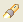
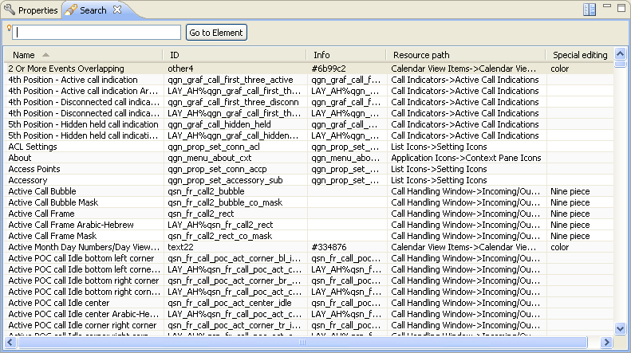
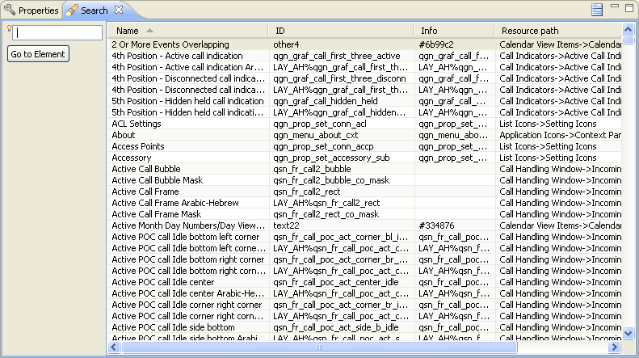
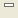
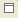
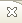
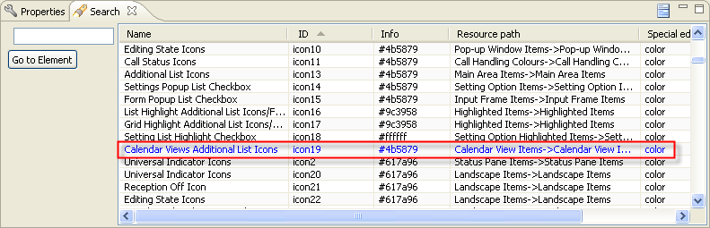

Search View
Carbide.ui provides a search feature which allows you to locate theme
elements by name. This view displays the results of such a search.
A search is initiated from the menu Help
-> Search or from the
main toolbar by selecting the Search
button tool button ( ). The Search view can also be
opened from the Windows -> Views menu.
In the Search view a search is started by typing part of the element
name in the text box and then selecting the selecting the Go to Element Button.
The search results are displayed in the table and list:
- The element name.
- The element ID.
- Info.
- The Resource view
hierarchy path to the element.
- Special editing
column provides information about theme
elements which contains special editing features.
The search view offers two layout options, which are switched with the
view’s menu tool button.

Figure:
Search View

Figure:
Search View 2
Tool Bar
|
Switch
layout of
the search view |
|  |
Minimizes
the view |
|  |
Maximize
the view |
|  |
Close the
view |
Identifying the Skinned and
Non-skinned elements
Search views provides a feature which will allows you to idetify the
skinned and non skinned elements. On the search view, the skinned
elements are highlighted in "Blue
Color".

Figure:
Identifying Skinned
Elements
Note
: In the search view, On
the Go
to element box,
Pressing CTRL+
Space bar on
keyboard will display the history of the search made.